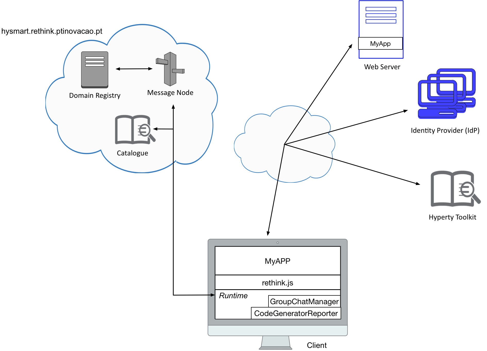

3rd Challenge
Each team should continue working on the previously developed application that uses the Code Generator Reporter and Group Chat Manager hyperties. The goal of this third challenge is to change the Code Generator Reporter hyperty. Now, whenever a code is generated, it should also generate a timestamp that will be returned with the generated code to the application.

To overcome this third challenge, each team should accomplish all the tasks bellow. Your feedback is extremely important for us in order to improve reTHINK framework in the future. As such, after complete all the tasks, each team must fill out page 4 of this Survey.
Note: If you do not fill out this form, your participation will not be considered!
Task 1 (estimate: 35 minutes)
Hyperty Development Toolkit - Currently, the toolkit can be used to develop hyperties to be executed in the Browser or in NodeJS. It is essential to use the toolkit in order to change the Code Generator Reporter hyperty and complete this challenge. In order to configurate properly the Toolkit follow the available documentation here.
Use develop branch of dev-hyperty-toolkit repository and betatester branch of dev-hyperty repository.
Task 2 (estimation: 40 minutes)
Task 2.1:
Change Code Generator Reporter hyperty - Inside the dev-hyperty folder is the source code of each hyperty (src folder). The toolkit encodes everything in this folder. Each team should change the generateCode(name) method present in the CodeGeneratorReporter.hy.js file. This method should generate a code, that will depend on the input, and a timestamp. Both should be returned.
Task 2.2:
Generate a code and broadcast to all the participants - Restart your app and try to generate a new code and broadcast it to all the participants of some chat room.